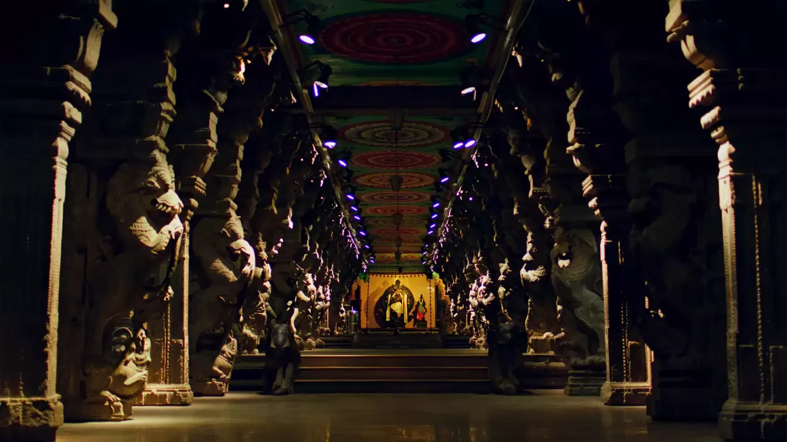

Aayiram Kaal Mandapam
The mystical city of Madurai is where ancient histories and cultural richness interweave to create a tapestry of splendour. There, in the midst of this enchanting land, lies a hall of unparalleled grandeur and beauty—the Aayiram Kaal Mandapam. This hall, renowned as the "1000-pillar hall," is a testament to the architectural brilliance of the Tamil civilization. Nestled within the venerated grounds of the Meenakshi Amman Temple, this hall has been a source of awe and inspiration for generations.
As you cross the threshold of the Aayiram Kaal Mandapam, you will be greeted by its ethereal beauty. The hall, carved from a single massive rock, is a marvel of artistry and skill, with its pillars, which number a staggering 1000, intricately carved with depictions of the gods and goddesses of Indian mythology. These pillars, each with its own unique story to tell, offer a window into the rich cultural heritage of Madurai, and their grandeur will leave you spellbound.
The musical pillars, located in the western reaches of the hall, are an experience like no other. These pillars, upon being struck, produce melodious sounds that are said to have been crafted to enthral all who hear them. These musical pillars, a testament to the engineering prowess of the Tamil civilization, will transport you to a realm of pure enchantment.
The pièce de résistance of the Aayiram Kaal Mandapam, however, is the magnificent statue of Natraja, the Indian God of Dance. This statue, a true masterpiece of art, depicts Natraja in all his resplendent glory, with arms raised in a dance pose and a face etched with unbridled joy. The statue, with its graceful lines and intricate details, is a visual feast and a testament to the artistic genius of the ancient craftsmen who created it.
The Aayiram Kaal Mandapam is a hall of unparalleled beauty and grandeur, a true gem of Madurai, and a destination that should not be missed by those who are enamoured with history, architecture, and culture. So, come and bask in the splendour of this magnificent hall, and allow yourself to be swept away by its beauty and enchantment.


Aayiram Kal Mandapam is well connected by road to major cities and towns in Tamil Nadu. One can take a taxi or a local bus to reach the location.
Madurai Airport, about 12 km away.
Madurai Junction Railway Station, about 2 km away.
Madurai has a hot tropical climate. It is a destination that can be visited any time of the year. However, for the best experience, visit the destination during December to February.